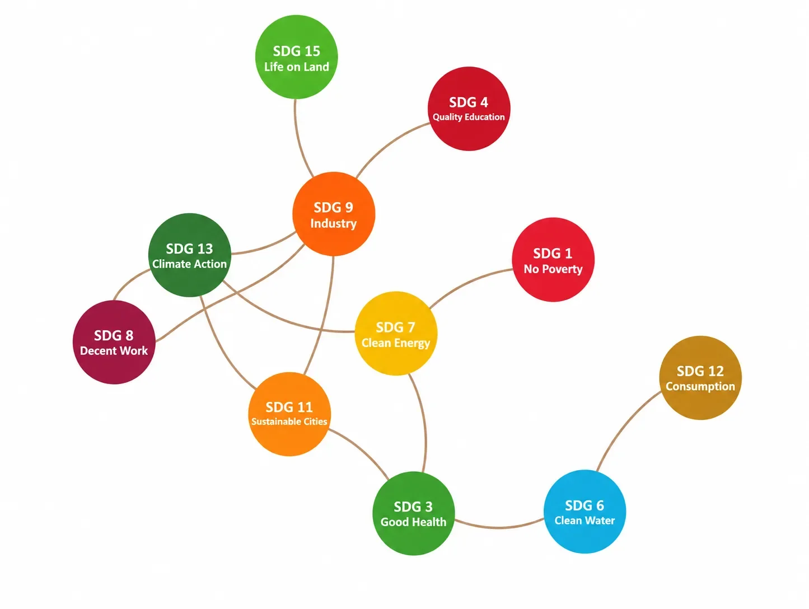
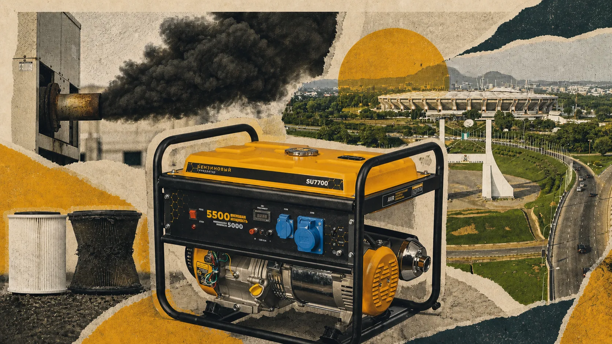
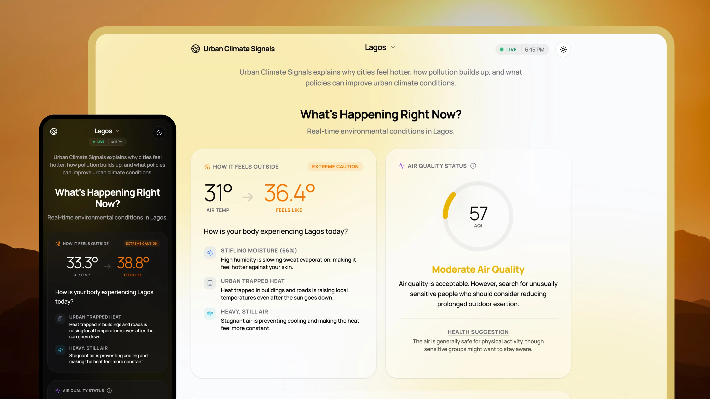
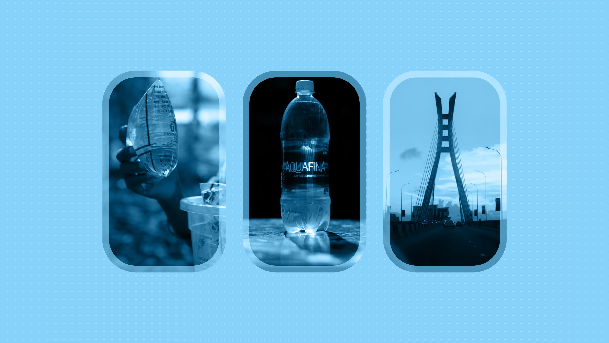
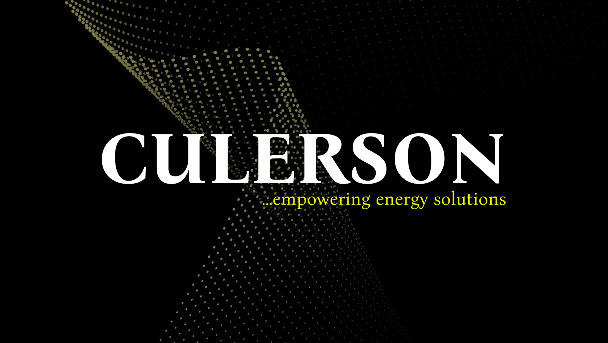
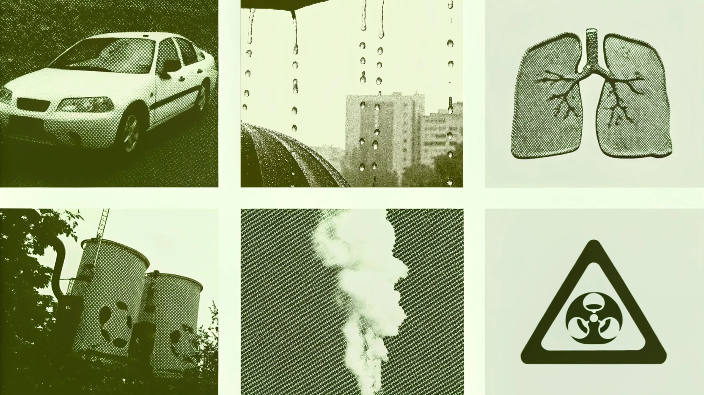

Research
Find what is true, consequential, and still unclear.
Susbridge is the impact studio of Tomi Abe and Adetoro Adetayo. We turn research into useful strategy, tools, and stories.
See the workResearch, strategy, and digital craft for the conditions that shape life.
It is the condition of places, livelihoods, institutions, and culture. The work starts where those things meet.
Not decks for the shelf. Work that lets people see the situation, choose a direction, and keep moving.
Find what is true, consequential, and still unclear.
Give a team a direction it can act on.
Make evidence useful beyond the room.

Different questions. Different forms. The same standard of usefulness.

A household carbon account that makes electricity choices visible.
Research, data, household energy Open case
A public tool that brings Lagos heat and air quality into one clear view.
Research, interface design, public information Open case
A life cycle study that puts common assumptions about packaging under scrutiny.
Life cycle assessment, scenarios, visual communication Open case
Making an energy advisory's technical expertise easier to find, understand, and trust.
Embedded strategy, narrative, website, content Open case
A Nigeria-focused life cycle study of the cars people rely on every day.
Life cycle assessment, transport, public research Open casePlaces where the questions can keep doing their work after a project ends.
Make complexity legible.
Make change visible.
Test what has not been tried.
Articles on the choices, stories, and systems that shape what comes next.
Two founders, carrying the work from first conversation to final decision.
Creative & Digital Strategy
Tomi brings a maker's eye to the studio, connecting language, technology, and visual craft to build things people can understand, use, and return to.
Sustainability Research & Strategy
Adetoro brings a researcher's patience to the studio, following evidence, systems, and human realities until a question becomes something tangible, grounded, and worth acting on.
We take on work as a commission, a focused sprint, a funded pilot, or an embedded partnership.
Start a conversation